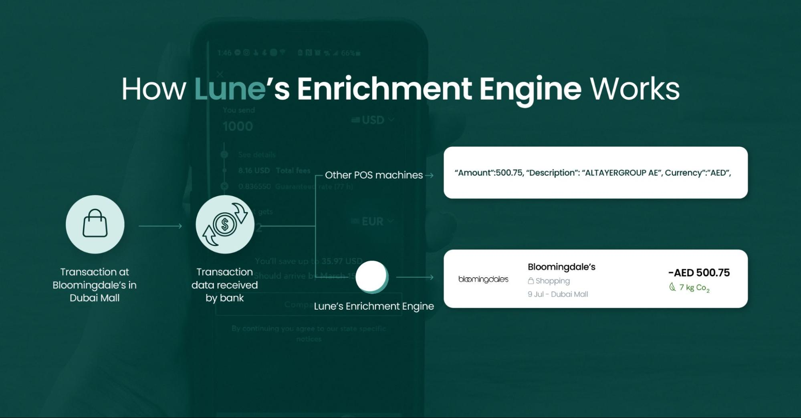

How Lune's Enrichment Engine Empowers MENA’s Financial Institutions with Local Merchant Identification
As the financial landscape in the MENA region keeps progressing, both financial institutions and their users demand more accurate, efficient, and relevant sources of transactional data.
Published on

As the financial landscape in the MENA region keeps progressing, both financial institutions and their users demand more accurate, efficient, and relevant sources of transactional data.
To address this need, we've enhanced our enrichment engine to support local merchant identification within the MENA region, allowing financial institutions to categorize their transactional data from a wider range of relevant sources instead of the generic labels that most competitors offer. Our engine is capable of enriching data from any source in a matter of seconds.
The Power of Local Merchant Identification
One of the key challenges faced by financial institutions in MENA is accurately identifying and categorizing transactions based on specific local merchant names.
While most financial institutions provide vague transactional info, our enrichment engine goes a step further by identifying local merchants by their specific brand names. This results in clearer and more accurate data, which in turn enables financial institutions to provide better insights and services to their customers.
How it Works

For example, consider a user who just bought an item from Bloomingdale's in Dubai Mall - most POS machines might only categorize the transactions under the mother company, such as "Al Tayer Group" or "Department Store," while Lune's engine would clearly identify the transactions as "Bloomingdale's" along with the right logo and detailed merchant info. This level of detail makes a world of difference for customers and financial institutions alike.
The Speed of Lune's Latest Enrichment Engine
Our enrichment engine is designed to process and categorize transactional data at an impressive pace. With the help of advanced machine learning and AI algorithms, our engine can accurately categorize and enrich financial data with local merchant details in just seconds.
This rapid processing allows financial institutions to access the information they need to serve their users more efficiently, without compromising on accuracy or detail.
How Lune's Engine Benefits the MENA Financial Ecosystem
Lunedata's unique approach to financial data enrichment brings numerous benefits to the MENA financial ecosystem, including:
- Enhanced User Experience: Accurate transaction categorization with local merchant identification allows users to better understand their spending habits and manage their finances more effectively.
- Improved Financial Services: With enriched transactional data, financial institutions can develop targeted products and services, such as personalized budgeting tools, cashback programs, and credit offers tailored to individual user’s preferences.
- Visual Enrichments: Providing visual elements such as logos and brand names helps users quickly identify and recognize merchants, further enhancing their experience with financial tools and platforms.
- Streamlined Compliance: Detailed transaction categorization can simplify the process of meeting regulatory and reporting requirements for financial institutions operating in the MENA region.
Getting Started With Lune
Explore Lunedata's enrichment solutions today and discover how your institution can harness the power of cutting-edge data enrichment technology.